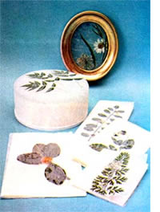

Most everybody knows that weeds and wildflowers can be used in the construction of lovely collages and other works of art (see "Flowers for Framing and Funds", MOTHER NO. 27). But did you know that all kinds of beautiful objects can be created from flowers that have not been sandwiched between the pages of a heavy book until they've become so dry that they crumble?
I'm talking about grasses, leaves, and blooms that are preserved-while still fresh and pliant-with a simple seal of glue and tissue paper. These free-for-the-picking plant snips can grace a note card, a trinket box, or any number of unique framed pictures for your wall . . . and all that's required to preserve them are some inexpensive materials and just a few minutes of your leisure time.
For instance, if you like the idea of sending a letter enfolded within your own personalized, one-of-a-kind notepaper cover . . . start with a good-sized piece of cardboard, a thin-edged metal ruler, some wax paper, some white glue (the kind that's invisible when dry . . . such as Elmer's), and some separated sheets of white tissue paper (the facial kind).
First, on the cardboard, draw an outline of the stationery your covers are meant to enclose. Next (and working on the right-hand half of the outline only so thatwhen each cover is completed and folded like a book-the design will wind up in the proper place), arrange your chosen components into any "practice" design that pleases you. At this point, remove the flowers and leaves, place a sheet of wax paper over the outline, and brush the entire sheet with a half-and-half solution of glue and water. Then spread your wildflowers out on the righthand side of the cardboard again-as you planned themand cover the whole sheet of wax paper with a single thickness of facial tissue.
Paint more glue solution onto the sheet of tissuesaturate the paper until it's nicely wrinkled-and allow the glue to dry. Then press the two sheets of paper (and the plant life between them) with a warm iron, put the bonded sheets back over the cardboard outline, andusing the metal ruler-tear the excess paper off your cover along each of its four edges. Finally, crease the cover through its center (so that the tissue and flowers are on the outside), fold it over its stationery sheet (and glue the two together with several dots of the cement solution), and your piece of handiwork is all ready to be used.
Clear plastic trinket boxes can be decorated in much the same way. Pick up a few of the small, transparent containers at a craft supply shop (the 3" X 2" X 1" ones are a practical size). Then lay out a practice design on top of one of the boxes, set the arrangement aside, and cover your working surface with a thin coat of glue solution. Return the flowers to the positions you've chosen for them, cover them with a piece of tissue paper cut to the size of the box, and gently brush the paper with more glue.
No sooner is the box dry than it's finished! . . . and all ready to hold such things as stamps, needles and thread, jewelry, or pills.
Once I'd tried my hand at trinket boxes, it seemed natural to me to progress on to pictures on glass. To do some yourself, you'll need the same materials that I've already listed, with the exception of wax paper and the addition of picture frames.
I select my frames from the local dime store, and you can probably do as well at your neighborhood fiveand-dime. Most any size and variety of frame will work . . . from small, matched, gilded ones right on up to a biggie measuring 12" X 16" or larger.
Begin by taking the frame apart and cleaning its pane of glass. Then follow the same procedure that you follow when decorating a trinket box: coat of glue, flower design, single sheet of tissue, and second coat of glue. When your creation has dried, just cut away any extra paper that extends beyond the glass and either glue the picture into its frame or fasten it with the small cleats often provided for that purpose. If you wish, you can insert a colored mat behind the glass to help bring out the design, but the wall itself will usually make a fine mat.
My notepaper covers, trinket boxes, and framed pictures are not only fun to create but also serve as excellent all-occasion gifts. And-better still-they've always sold very well at craft galleries and tourist shops in my area. The possibilities for this kind of work, using local materials gathered in any part of the country, are endless. And-with any craft-you don't have to waste a minute of time waiting for your fresh-picked blossoms to flatten and dry!
|
 |
|
|